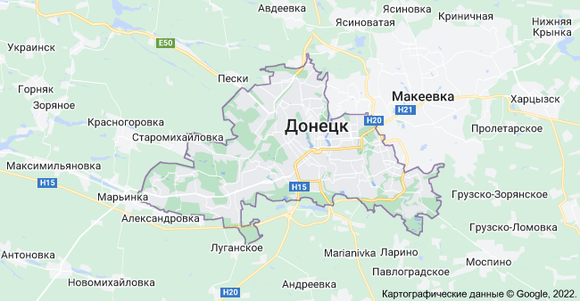

Площадь - 26,5 тыс. кв. км (4,4% территории Украины). Население - 5252 тыс. человек (10% населения страны). Донецкая область - самая большая в Украине по численности населения, средняя плотность которого составляет почти 187 человек на 1 кв. км. Административно-территориальное деление: 18 районов.
Географическое положение. Расположена на юго-востоке Украины, в степной зоне. На юге омывается Азовским морем. Поверхность преимущественно равнинная, изрезанная оврагами и балками. Водную систему области составляют реки Северский Донец, Казенный Торец, Самара, Волчья, Кальмиус, Грузский Еланчик, Крынка, водохранилища Старокрымское, Клебан-Бицкое, Карловское, Кураховское, Ольховское, каналы "Северский Донец - Донбасс" и "Днепр - Донбасс".
Климат. Умеренно континентальный. Средняя температура января составляет -6°C, июля - +21°C. Регион довольно засушливый, количество осадков в год - 524 мм.
Природно-рекреационный потенциал. 70 территорий и объектов природно-заповедного фонда, в частности Национальный природный "Святые Горы", филиалы Украинского степного заповедника - Хомутовская степь и Каменные могилы, 30 заказников государственного и местного значения, 30 памятников природы, шесть заповедных урочищ, ботанический сад в Донецке, в состав которого входят Луганский заповедник, Криворожский и Приазовский отделы. Мягкий климат побережья Азовского моря, лечебные грязи, источники минеральных, радоновых и столовых вод принадлежат к рекреационным ресурсам области, на базе которых созданы курорты Мариуполь, Славяногорск, Славянск.
Транспортная сеть. Хорошо развита. Донецка железная дорога обеспечивает до 40% общегосударственных перевозок. Наибольшие железнодорожные узлы - Ясиноватая, Красный Лиман, Дебальцево, Никитовка, Иловайск, Волноваха. На побережье Азовского моря - морской порт Мариуполь (мощность переработки грузов - 12 млн. т). Есть аэропорты в Донецке (международный), Мариуполе, Краматорске. Плотная сеть автомобильных дорог.
Экономический потенциал. Промышленность: наличие топливно-энергетических и минерально-сырьевых ресурсов создали условия для развития промышленного комплекса с высокой концентрацией отраслей тяжелой промышленности, научной и социальной инфраструктуры. На Донецкую область приходится больше половины добычи угля, производства готового проката, кокса, чугуна, стали и практически весь объем выпуска прокатного оборудования в Украине. В структуре промышленного производства региона наибольший удельный вес имеют черная металлургия, топливная промышленность и электроэнергетика. В структуре производства товаров народного потребления доля продовольственных товаров составляет 64%.
Историко-культурный потенциал. Общее количество памятников истории, археологии, градостроительства и архитектуры, монументального искусства - 2399. Туристическо-экскурсионными объектами в области являются Государственный историко-архитектурный заповедник в Славяногорске, Святогорский пещерный монастырь (ХVІІ-ХVІІІ ст.), культурно-архитектурные сооружения в Артемовске. В области пять театров (из них три - в Донецке), шесть государственных музеев. Каменные могилы - музей под открытым небом, расположенный на высоте 150-200 м над уровнем моря (Альпы в миниатюре, возраст которых - полтора миллиарда лет). Музей выдающегося художника А.Куинджи в Мариуполе. Один из лучших климатических курортов Украины Святогорск.
